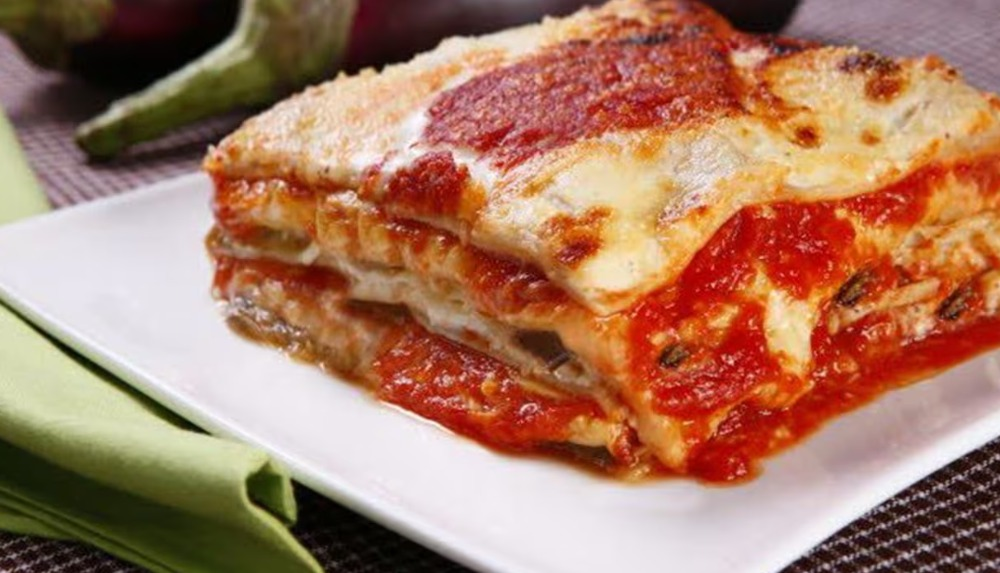

.....
Lasanha de Berinjela
Como fazer a sua Lasanha de Berinjela
A Lasanha de Berinjela é uma versão mais leve e saudável da clássica lasanha italiana, substituindo as tradicionais folhas de massa por fatias finas de berinjela. Essa variação é uma opção deliciosa para aqueles que buscam reduzir o consumo de carboidratos ou simplesmente desejam explorar novos sabores.
Ingredientes
A Lasanha de Berinjela é uma opção versátil que pode ser servida em diversas ocasiões. Desde refeições do dia a dia até eventos especiais, esta receita agrada a diferentes paladares e é uma escolha excelente para quem busca uma alternativa mais leve e nutritiva.
Benefícios
A berinjela é uma fonte de vitaminas e minerais essenciais, como vitaminas C e K, potássio e folato, contribuindo para uma dieta equilibrada e para a saúde do organismo. Seus antioxidantes combatem os radicais livres, ajudando a prevenir doenças crônicas e promovendo um envelhecimento saudável.
A beringela pode ser um aliado no controle do colesterol, contribuindo para a saúde cardiovascular, e a riqueza em fibras favorece a saúde digestiva. Sua capacidade de regular os níveis de açúcar no sangue pode ser benéfica para indivíduos com diabetes, e seu baixo teor calórico e alto teor de fibras podem ser úteis na gestão do peso quando incorporada em uma dieta equilibrada e estilo de vida ativo.
Modo de Preparo
-
Hora de começar
Reúna todos os ingredientes.
Passo 1
-
Grelhe a beringela
Em uma panela, aqueça um fio de azeite e grelhe todas as fatias de berinjela de ambos os lados. Reserve.
Passo 2
-
Doure...
Na mesma panela, despeje o restante do azeite, deixe esquentar e doure a cebola e o alho.
Passo 3
-
Azeitonas e molho de tomate
Adicione as azeitonas e o molho de tomate. Cozinhe por 10 minutos.
Passo 4
-
No seu gosto
Ajuste os temperos do molho conforme seu gosto.
Passo 5
-
Prepare sua lasanha
Em um refratário que possa ir ao forno, coloque uma fina camada de molho.
Passo 6
-
Faça camadas
Faça uma camada de berinjela e outra de presunto picado, repetindo o processo até acabar os ingredientes, finalizando com o molho.
Passo 7
-
Adicione o queijo
Polvilhe metade do queijo ralado por cima, espalhando bem.
Passo 8
-
Camada de requeijão
Faça uma camada com o requeijão e finalize com o restante do queijo ralado.
Passo 9
-
Forno preaquecido
Leve ao forno preaquecido a 180 °C por 20 minutos ou até o queijo gratinar.
Passo 10
-
Hora de aproveitar
Sirva e bom apetite!
Passo 11
Passo a passo
Passo 1
Reúna todos os ingredientes.
Passo 2
Em uma panela, aqueça um fio de azeite e grelhe todas as fatias de berinjela de ambos os lados. Reserve.
Passo 3
Na mesma panela, despeje o restante do azeite, deixe esquentar e doure a cebola e o alho.
Passo 4
Adicione as azeitonas e o molho de tomate. Cozinhe por 10 minutos.
Passo 5
Ajuste os temperos do molho conforme seu gosto.
Passo 6
Em um refratário que pode ser levado ao forno, coloque uma fina camada de molho.
Passo 7
Faça uma camada de berinjela e outra de presunto picado.
Passo 8
Repita o processo até acabar os ingredientes, finalizando com o molho.
Passo 9
Por cima, polvilhe metade do queijo ralado, espalhando bem.
Passo 10
Faça uma camada com o requeijão e finalize com o restante do queijo ralado.
Passo 11
Leve ao forno preaquecido a 180 °C por 20 minutos ou até o queijo gratinar.
Passo 12
Sirva e desfrute!